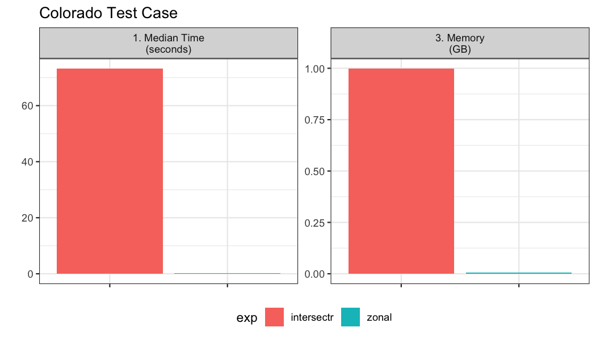

Methods
The first step in computing zonal statistics are the need to compute a weight map that can be used to reallocate the gridded data with respect to the percent overlapping each cell. There are two primary packages that tackle this which include intersectr (which uses areal as a back-end) and zonal which uses exactextractr.
From the exactextractr documentation: "_Results from exactextractr are more accurate than other methods because raster pixels that are partially covered by polygons are considered. The significance of partial coverage increases for polygons that are small or irregularly shaped."
The same premise applies to intersectr/areal.
So, what is a weight grid?
A weight grid is unique to the aggregate units and grid its build from. It contains columns documenting the X and Y indexes of each grid cell along with the grid id. The X,Y are relative to the entire grid, while the grid ID is relative to subset within the bounding domain of the aggregations unit(s). Additionally the w stores the percent overlap between the grid cell and the aggregation unit identified by the ID column which is specified in the buildweighting_grid` function. An example is shown below:
Option 1: Intersectr:
Setting up the data for a intersectr weights map requires (1) computing a vector representation of the grid and (2) intersecting this grid with the aggregation units to determine the percent overlap or “coverage fraction”. Below the workflow from the intersectr docs is wrapped in a function that requires a NetCDF file path, a sf geometry set, an ID variable from the geometries, and the variable to extract from the grid.
library(intersectr)
library(ncmeta)
library(RNetCDF)
intersectr_weights = function(file, geom, ID, var){
nc_coord_vars <- nc_coord_var(file)
variable_name <- var
nc_coord_vars <- filter(nc_coord_vars, variable == variable_name)
nc <- open.nc(file)
X_coords <- var.get.nc(nc, nc_coord_vars$X, unpack = TRUE)
Y_coords <- var.get.nc(nc, nc_coord_vars$Y, unpack = TRUE)
nc_prj <- nc_gm_to_prj(nc_grid_mapping_atts(file))
cell_geometry = create_cell_geometry(X_coords = X_coords,
Y_coords = Y_coords,
prj = nc_prj,
geom = geom,
buffer_dist = 0.1, # Degrees
regularize = TRUE)
data_source_cells <- st_sf(dplyr::select(cell_geometry, grid_ids))
target_polygons <- st_sf(dplyr::select(geom, !!ID))
st_agr(data_source_cells) <- "constant"
st_agr(target_polygons) <- "constant"
calculate_area_intersection_weights(
data_source_cells,
target_polygons, allow_lonlat = TRUE)
}Option 2: Zonal
In zonal grid weights are calculated using exactextractr as the back-end. The key function is weighting_grid.
library(zonal)Use Cases
Here two motivating use cases are shown to compare the efficiency of these approaches. The first covers a large area but has many small aggregation units. The second covers a large area but has a few large polygon aggregation units. Each of these pose a unique set of demands with respect to how the calculation is performed.
Grid
The gridded data and aggregate units we are working with can be seen below and downloaded from here:
file = 'pet_2020.nc'
(s = terra::rast(file))## class : SpatRaster
## dimensions : 585, 1386, 366 (nrow, ncol, nlyr)
## resolution : 0.04167, 0.04167 (x, y)
## extent : -124.8, -67.04, 25.05, 49.42 (xmin, xmax, ymin, ymax)
## coord. ref. : lon/lat WGS 84 (EPSG:4326)
## source : pet_2020.nc
## varname : potential_evapotranspiration (pet)
## names : poten~43829, poten~43830, poten~43831, poten~43832, poten~43833, poten~43834, ...
## unit : mm, mm, mm, mm, mm, mm, ...Looking at the grid we can see in consists of 810810 grid cells each with a 0.0417 meter by 0.0417 meter resolution. Additionally, there are 366 unique time slices in the NetCDF file.
Example 01: Many small aggregation units
Here, we look at an example with ~20,000 watersheds along the east coast.
geom <- st_make_valid(read_sf('hydrofabric.gpkg', "catchments"))
paint(geom)## sf [18041, 4]
## active geometry column: geom (POLYGON)
## crs: 5070 (NAD83 / Conus Albers)
## crs unit: metre
## ID chr cat-1 cat-2 cat-4 cat-5 cat-6 cat-7
## area_sqkm dbl 12.457576 267.083595 8.319214 9.278138 60.577~
## toID chr nex-2 nex-3 nex-5 nex-6 nex-7 nex-8
## geom sfc POLY 2,024B POLY 9,064B POLY 1,656B POLY 1,81~In total we have 18,041 aggregation units to summarize over the 366 time steps.
bnch <- bench::mark(
iterations = 1, check = FALSE, time_unit = "s",
intersectr = intersectr_weights(file, geom, "ID", "potential_evapotranspiration"),
zonal = weighting_grid(s, geom, "ID")
)
Example 02: Few, large aggregation units
Here, we test aggregation the 4km gridded data to 64 counties in Colorado.
colorado = AOI::aoi_get(state = "CO", county = "all")
paint(colorado)## sf [64, 13]
## active geometry column: geometry (MULTIPOLYGON)
## crs: 4269 (NAD83)
## crs unit: degree
## statefp chr 08 08 08 08 08 08
## countyfp chr 035 095 039 014 037 053
## countyns chr 00198133 00198163 00198136 01945881 0~
## affgeoid chr 0500000US08035 0500000US08095 0500000~
## geoid chr 08035 08095 08039 08014 08037 08053
## name chr Douglas Phillips Elbert Broomfield Ea~
## lsad chr 06 06 06 06 06 06
## aland dbl 2176272717 1781724973 4793658887 8547~
## awater dbl 6752511 301808 442148 1411781 1884999~
## state_name chr Colorado Colorado Colorado Colorado C~
## state_abbr chr CO CO CO CO CO CO
## jurisdiction_type chr state state state state state state
## geometry sfc MPOLY 872B MPOLY 824B MPOLY 824B MPOL~In total we have 64 aggregation units to summarize over the 366 time steps.
bnch2 <- bench::mark(
iterations = 1, check = FALSE, time_unit = "s",
intersectr = intersectr_weights(file, colorado, "name", "potential_evapotranspiration"),
zonal = weighting_grid(file, colorado, "name")
)